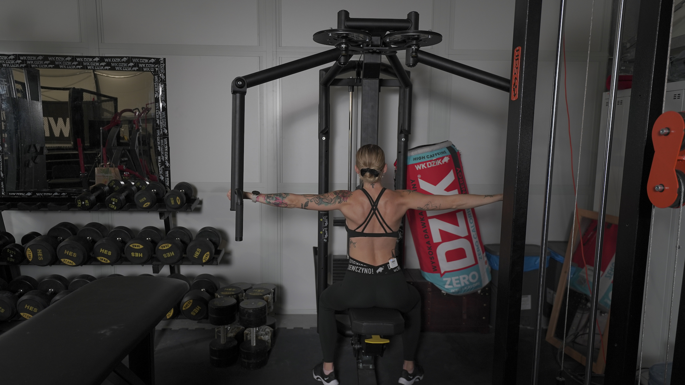
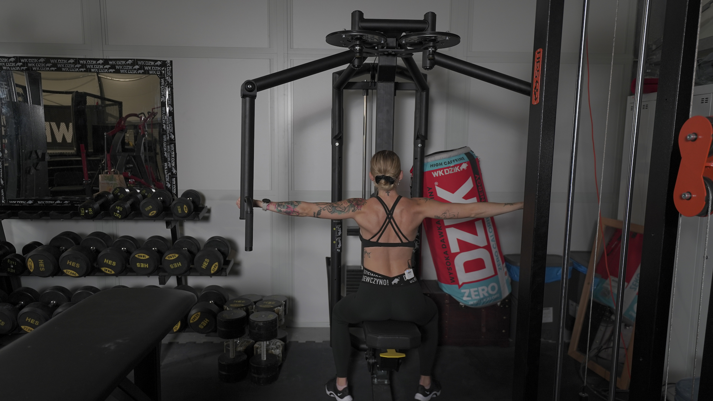

ODWODZENIE RAMION NA MASZYNIE (ODWROTNY BUTTERFLY)
_1.jpg) 

1.Dostosuj ustawienia maszyny do swojej budowy ciała.
2. Usiądź przodem do maszyny i złap uchwyty przed sobą.
3. Ściągnij łopatki i wykonaj ruch odwodzenia ramion na boki.
4. Kontrolując ruch, powróć do pozycji startowej.